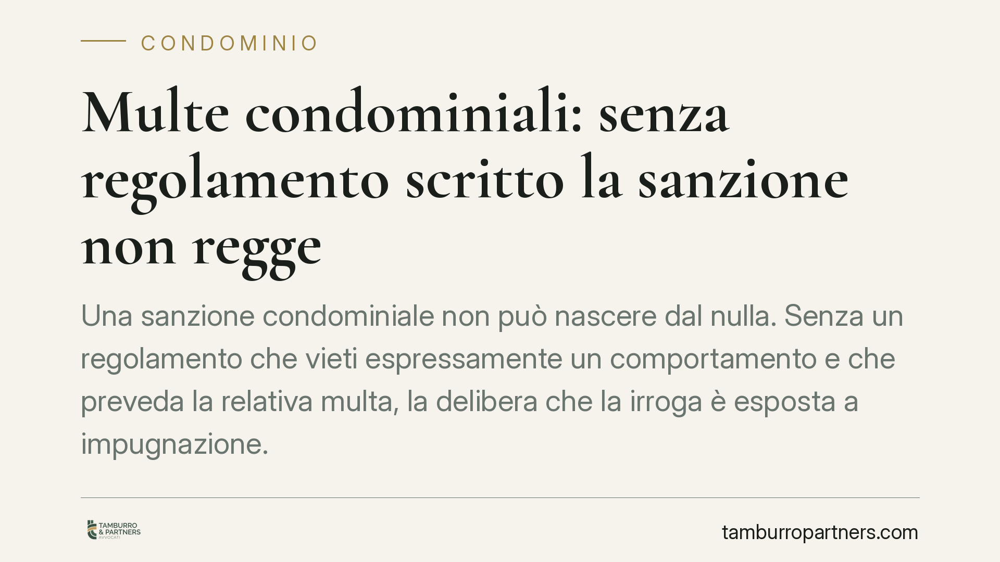

Multe condominiali: senza regolamento scritto la sanzione non regge
Una sanzione condominiale non può nascere dal nulla. Senza un regolamento che vieti espressamente un comportamento e che preveda la relativa multa, la delibera che la irroga è esposta a impugnazione. Un principio che l'art. 70 delle disposizioni di attuazione del Codice civile rende piuttosto chiaro, ma che nella pratica viene spesso trascurato da amministratori e assemblee.

Il principio: doppio presupposto scritto
L'assemblea non può multare un condòmino solo perché il suo comportamento infastidisce gli altri. Servono due condizioni, entrambe scritte nel regolamento condominiale.
La prima: deve esistere una regola specifica che vieti quella determinata condotta (ad esempio il divieto di stendere panni sui balconi, o l'obbligo di orari per i lavori rumorosi). La seconda: il regolamento deve prevedere espressamente la sanzione pecuniaria per la sua violazione. Mancando anche solo uno dei due elementi, la multa non ha fondamento.
Inquadramento normativo
Il riferimento è l'art. 70 disp. att. c.c., riformato dalla Legge n. 220/2012. La norma consente al regolamento di stabilire sanzioni fino a 200 euro per le infrazioni e fino a 800 euro in caso di recidiva, con destinazione delle somme al fondo per le spese ordinarie.
Il punto decisivo è che la norma rinvia al regolamento: è quest'ultimo la fonte del potere sanzionatorio. L'assemblea applica una regola preesistente, non la crea in quel momento. Se il regolamento tace, l'assemblea non dispone di alcuna base per punire.
Diversi orientamenti di merito hanno ribadito questa lettura restrittiva: la sanzione irrogata senza copertura regolamentare è priva di legittimo fondamento e la relativa delibera può essere contestata dal condòmino.
Nulla o annullabile? Una distinzione che conta
Parlare genericamente di "nullità" è impreciso. Le Sezioni Unite della Cassazione (sent. n. 9839/2021) hanno chiarito la linea di confine: sono nulle le delibere con oggetto illecito, impossibile o che incidono su diritti individuali senza il consenso dovuto; sono annullabili quelle affette da vizi procedurali o adottate in difetto dei presupposti di legge.
Una multa deliberata senza base regolamentare rientra, di regola, tra le ipotesi di annullabilità: manca il presupposto legittimante, ma non vi è un contenuto intrinsecamente illecito. La differenza non è teorica. L'annullabilità va fatta valere con impugnazione entro trenta giorni (art. 1137 c.c.) dalla deliberazione o dalla comunicazione; la nullità, invece, è deducibile senza limiti di tempo. Confondere le due categorie significa rischiare di perdere il termine.
Regolamento assembleare e regolamento contrattuale
Non tutti i regolamenti sono uguali. Il regolamento assembleare disciplina l'uso delle parti comuni e può essere modificato con la maggioranza prevista dall'art. 1136 c.c. Il regolamento contrattuale, accettato da tutti i condòmini (spesso richiamato negli atti di acquisto), può invece imporre limiti ai diritti individuali sulle proprietà esclusive.
La conseguenza è pratica: introdurre una sanzione che incide su un diritto individuale, o modificare clausole di natura contrattuale, richiede il consenso di tutti i condòmini, non la sola maggioranza assembleare. Una delibera a maggioranza che intacchi diritti individuali è, questa sì, nulla.
Attenzione ai regolamenti datati
Molti condomìni operano ancora con regolamenti anteriori al 2012, che prevedono importi delle multe ormai superati o incoerenti con i tetti attuali. Applicare quelle clausole alla lettera può generare contenzioso. È opportuno un aggiornamento che allinei il testo ai limiti dell'art. 70 nella versione vigente.
Cosa fare in concreto
- Amministratore: prima di proporre una sanzione, verificate che il regolamento contenga sia il divieto specifico sia la relativa previsione sanzionatoria. In assenza, astenetevi dall'irrogare multe.
- Amministratore: proponete all'assemblea l'aggiornamento dei regolamenti anteriori al 2012 con importi non più coerenti con i limiti di legge.
- Condòmino sanzionato: controllate il verbale e il testo del regolamento per accertare l'esistenza del doppio presupposto scritto.
- Condòmino: ricordate che la delibera sanzionatoria annullabile è impugnabile entro trenta giorni (art. 1137 c.c.); valutate la decorrenza del termine prima di assumere decisioni.
- Assemblea: per introdurre nuove sanzioni che incidano su diritti individuali o modificare clausole contrattuali, raccogliete il consenso unanime, non la sola maggioranza.
Un equilibrio tra ordine e legalità
Lo strumento sanzionatorio serve a far rispettare le regole della convivenza. Ma proprio perché incide sul patrimonio del singolo, esige una base certa e preventiva. La forma scritta non è un formalismo: è la garanzia che nessuno venga punito per una regola inventata a posteriori.
Ogni condominio ha una storia a sé.
Se gestisci un'amministrazione e vuoi un confronto su una specifica questione condominiale, scrivi allo studio. Ti rispondiamo entro un giorno lavorativo.